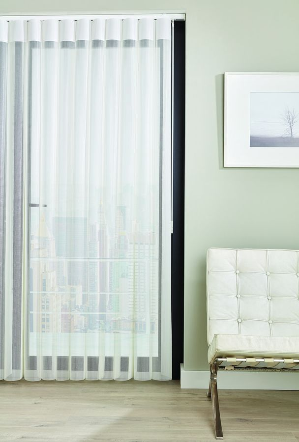
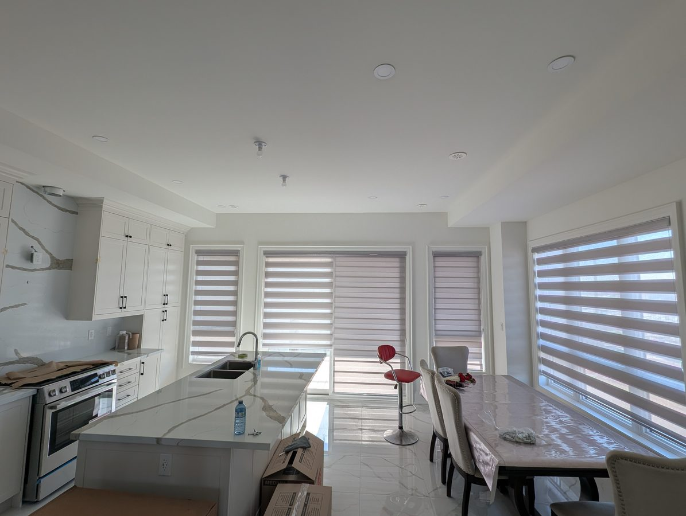
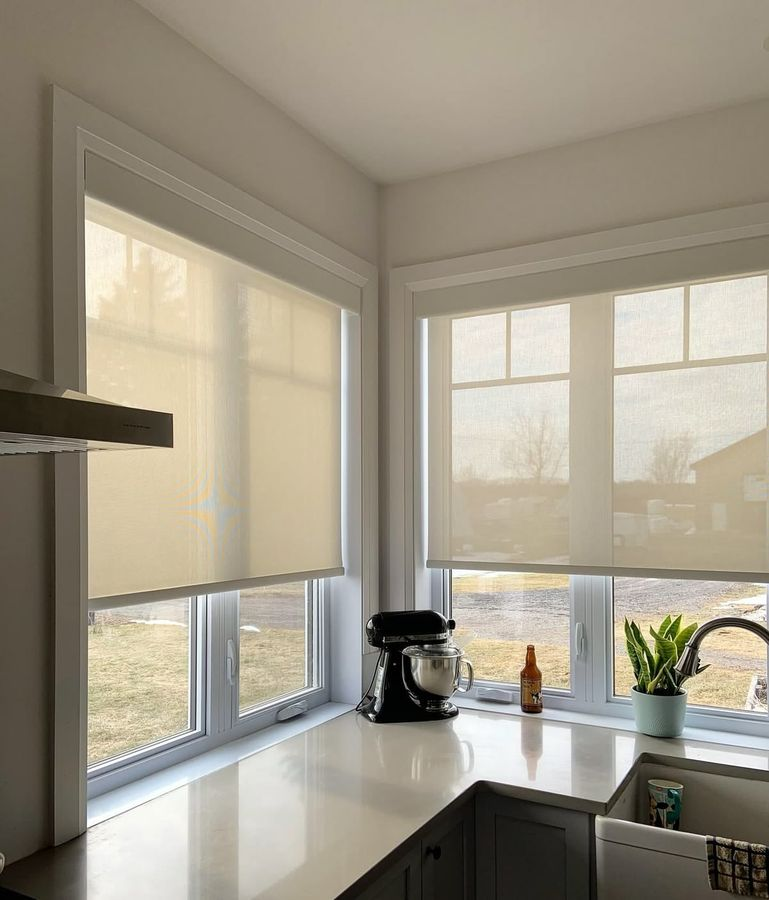
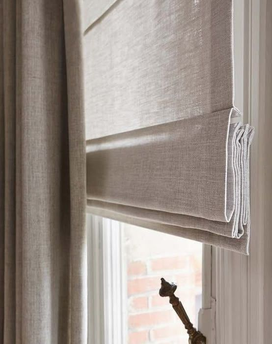

Soft fabric vertical vanes glide smoothly across sliding doors and expansive windows — combining the easy operation of a vertical blind with the elegance of a fabric shade.
Soft vertical blinds replace the old, rattly plastic vanes with smooth, fabric-wrapped verticals that stack neatly to one side. They are the ideal solution for patio doors and wide windows, where they manage glare and privacy without taking up floor space.
Rotate the vanes to control light and view, or draw them fully aside for clear access to your door. Available in a wide range of fabrics to coordinate with the rest of your window coverings.
Everything you get when you choose custom soft vertical blinds from our local Oakville team.
Slim fabric vanes stack neatly to the side.
Glides aside for easy access to sliding doors.
Spans very wide and tall windows with ease.
Rotate the vanes to control sun and reflections.
Smooth wand or cord control for daily use.
Add quiet motorization for one-touch control.
Not sure where soft vertical blinds fit? Our designers help you choose the right product for every room during your free consultation.
Yes — they are one of the best options for sliding patio doors. The vanes draw cleanly to one side for full access and rotate to control light and privacy without intruding into the room.
Instead of stiff plastic louvres, soft verticals use fabric-wrapped vanes that look and feel like a soft shade. They are quieter, more elegant and far less prone to clattering.
Absolutely. Vertical blinds have essentially no width limit, making them ideal for floor-to-ceiling windows and wide openings other shades struggle to cover.
Soft vertical blinds typically range from $140 to $240 per window installed depending on size and fabric. Book a free measurement for an exact quote.
Book your free, no-obligation in-home consultation. We measure, manufacture in Oakville, and install — usually within a week.


